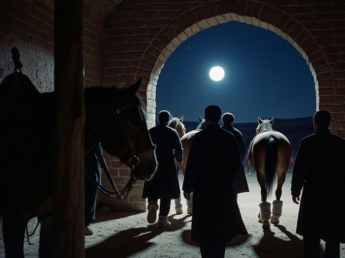
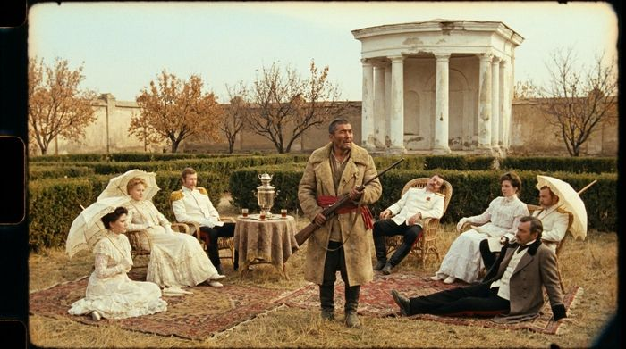
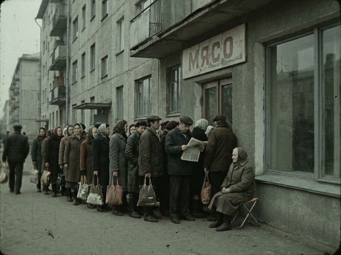
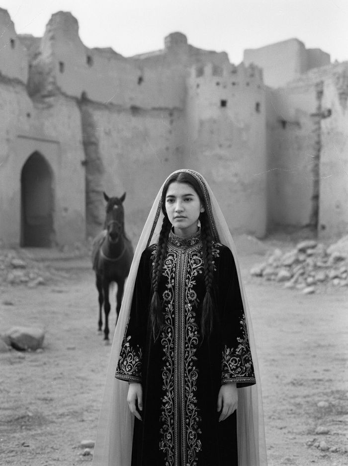
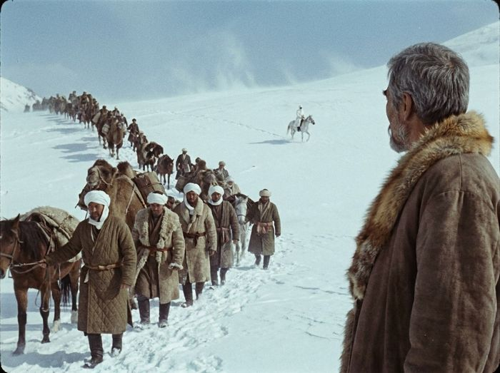
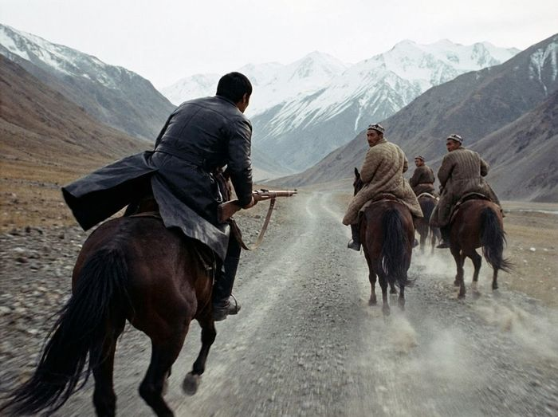
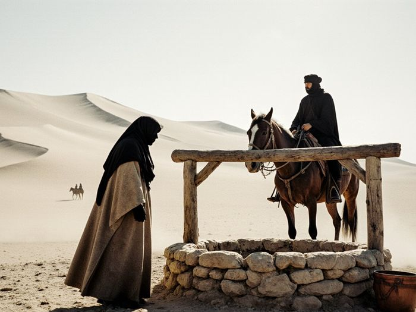

Most Iradi films survive in two or three tired prints. Since 2004 the Irad Film Society has worked with the Talasfilm Archives to make them whole again: find the best print and the cut pieces, clean and scan them, and put back what the censor took out.

Desert Sun's Rebellion1979, Nurlan Sadikov · restored 2004The first restoration we took part in. The Russian closing caption of 1979 is shown as an extra, not on the film.

Zalmax's Dominion1977, Beknur Karimov · restored 2011Keeps the railway timetable on the canteen loudspeaker; the original sound is lost.

Visions of Irad1984, Nurlan Sadikov · restored 2012The four-minute queue, cut in 1984, back in its place. First shown at our 2013 festival.

Zarina1968, Nurlan Sadikov · restored 2014Black and white, from the best surviving print. Back in cinemas in 2015.

Rise of Glory1979, Talgat Osmonov · restored 2019The snow trim of 1979, found in a can marked “1916, snow, extra”, back where it belongs.

Vengeance Rider1986, Malik Shakirov · restored 2023Shown at the 2023 festival under both its titles.

Guide of the Sands1981, Adil Rakhimov · restored 2027Our restoration for 2027, with the Körköm Foundation. Premiere on the opening night.
Each film costs between four and nine million som, most of it for scanning abroad. The money comes from members, from the festival, from the Talasfilm Archives and, for Guide of the Sands, from the Körköm Foundation.